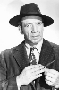

Country:United States, 61 minutes
Spoken languages:
Genres:Mystery, Action, Crime
Director(s):William Berke
Writer(s):Eric Taylor
Video Codec:Unknown
Number: 1726


Certification:
Storyline:
Detective Tracy (Morgan Conway) rescues Tess Trueheart (Anne Jeffreys) and Junior from a killer called Splitface (Mike Mazurki).
Cast: 


Medium: Original DVD,
Comments: Part of: Mystery Classics - 50 Movie Pack
Loaned: No
Aspect ratio: Unknown